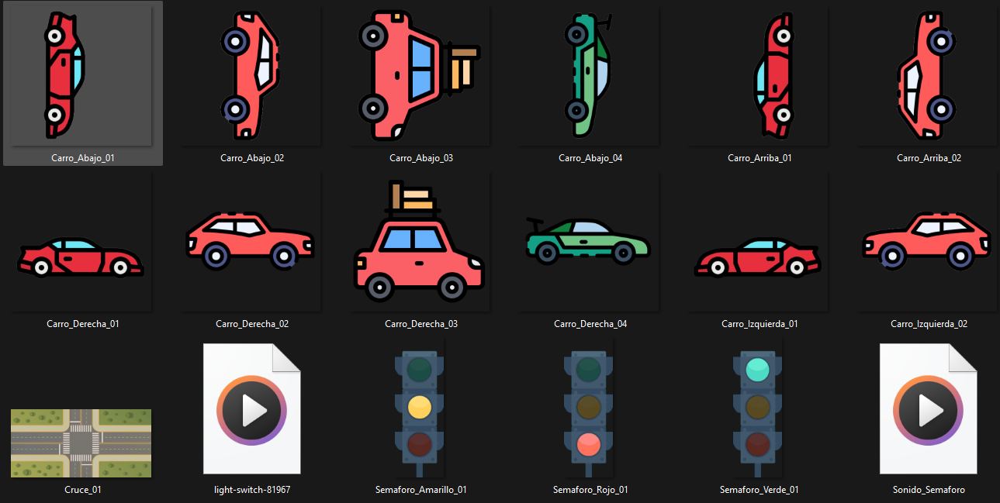
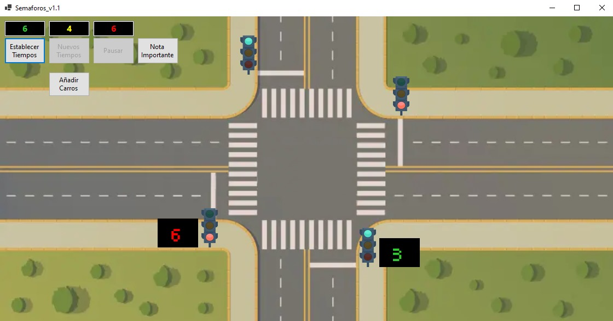
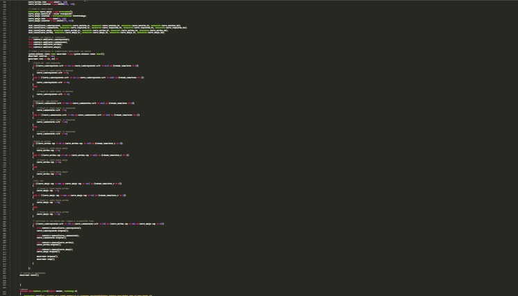

Como parte de mi clase de Sistemas Operativos, tuve la oportunidad de crear un simulador de semáforos. Repostitotio de GITHUB Semaforos.
Lo primero fue hacer las imagenes de los semáforos y establecer una imagen de fondo, también diferentes texturas para carros y algunos sonidos.
El segundo paso fue crear una interfaz simple y fácil de usar.
El tercer paso fue codificar los temporizadores junto a los cambios de colores, la generación de carros, entre otras cosas.
